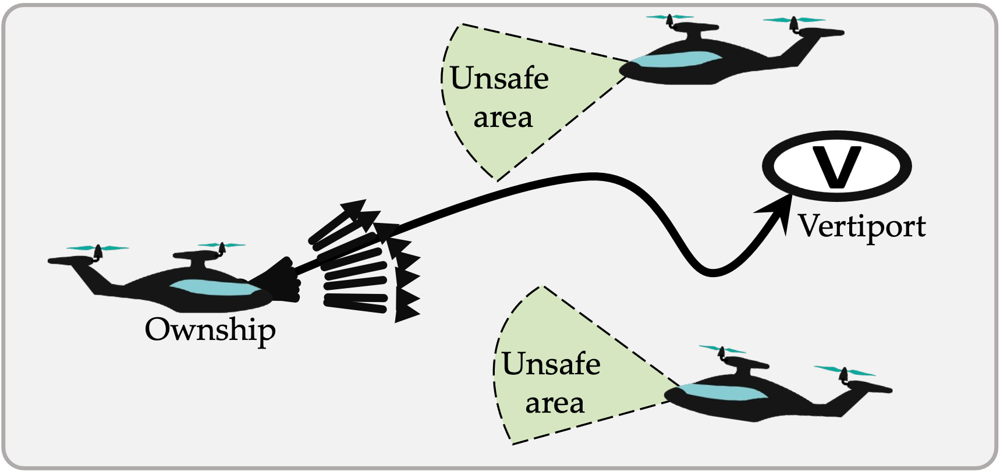
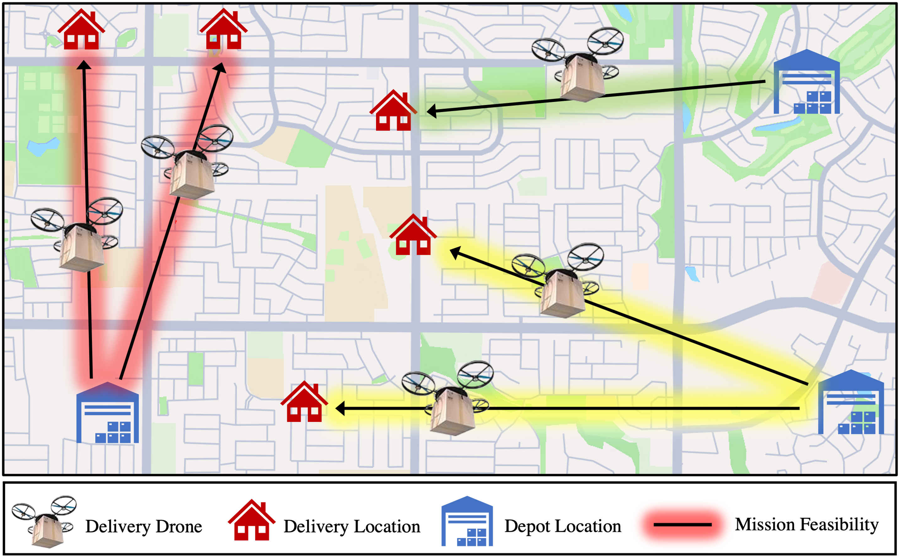
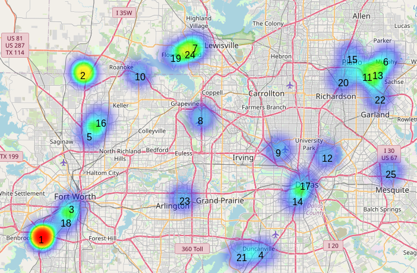

Abenezer Taye
PhD, Aerospace Engineering
he / him
(Pronounced: A-buh-NE-zer TA-yee)
abenezertaye [at] gwu [dot] edu
Hello.
I am a PhD candidate in the Mechanical and Aerospace Engineering department at the George Washington University.
By contributing to the intersection of flight control, battery prognostics, multi-agent systems, and machine learning, I develop autonomous systems and decision support tools for aviation, air transportation, and aerial vehicles.
My research expertise blends both learning-based and model-based approaches for flight mechanics (both fixed-wing and rotorcraft) and control, aviation electrification, and battery prognostics, ensuring that new aircraft types such as small unmanned aerial systems (UAS) and electrical take-off and landing (eVTOL) vehicles operate safely and energy-efficiently in complex environments, e.g., high-density airspaces under winds.
Research Projects
Here are some of my recent, representative publications and projects. For all my papers, see my publications page or my Google Scholar.

How can we guarantee both safety and scalability in AAM trajectory planning? We propose a multi-agent decentralized trajectory planner for AAM operations that uses a reachability analysis-based safety verification scheme and a highly scalable Markov Decision Process (MDP)-based decision maker.
RA-L '24 Paper Video WebsiteEnergy-Efficient Trajectory Planning and Feasibility Assessment

How can we generate energy-efficient trajectories and assess the feasibility of flight missions? We proposed a framework that generates energy-efficient trajectories accounting for wind and several aircraft-related factors and performs battery prognostics-based uncertainty quantification for flight mission feasibility assessment.
CoRL '23 Paper Video WebsiteEnergy Demand Analysis for eVTOL Aircraft in Urban Air Mobility Hi

Pose estimation is challenging in heavy clutter with many occlusions. We model objects as graphs of their parts and fuse known geometric priors with a learned likelihood to get robust pose estimates for articulated objects.
IROS '20 Paper Video WebsiteTeaching
I'm passionate about teaching and have been lucky to teach some great groups of students during my PhD at the University of Michigan. Most recently, I've had the opportunity to co-develop a new course, Hello, Robot! Intro to Artificial Intelligence and Programming. This video describes the pilot offering of the course in 2021!
Previous Teaching
|
Hello, Robot! Intro to Artificial Intelligence and Programming Distributed Teaching Collaborative between University of Michigan, Berea College, and Howard University Developer, Teaching Consultant |
Fall 2023 | |
|
Intro to Artificial Intelligence and Programming (ROB 102) University of Michigan Developer, Co-instructor |
Fall 2022 Fall 2021 |
|
|
Mathematics for Robotics (ROB 501) University of Michigan Graduate Student Instructor |
Fall 2019 Fall 2020 |
|
|
Autonomous Robotics (EECS 467) University of Michigan Graduate Student Instructor |
Winter 2020 | |
|
Design Principles & Methods (ECSE 211) McGill University Teaching Assistant |
Winter 2016 Fall 2017 |